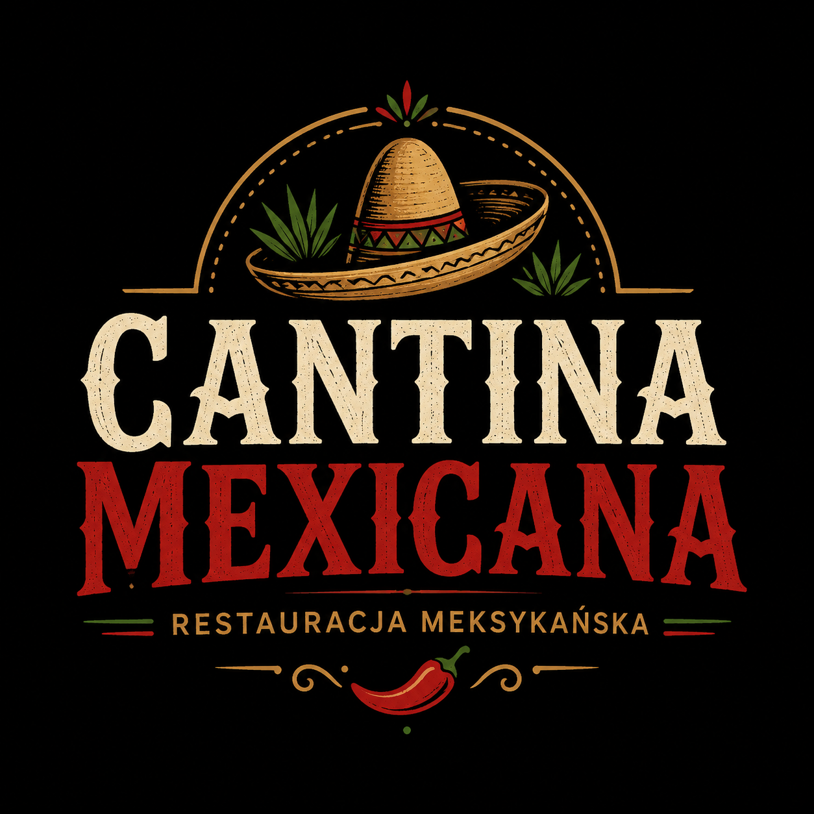

Flota w rozbudowie
Aktualnie posiadamy 2 ciężarówki, a kolejne 3 są już w drodze od dealera. Firma rozwija flotę pod regularne kursy i obsługę partnerów.
Sandy Shores • Route 68 • San Andreas
Profesjonalna firma transportowa w amerykańskim klimacie: złoto, stal, czarny asfalt, pustynne trasy i konkretna organizacja pracy.
American trucking company
V&G Logistic działa jak prawdziwa firma transportowa: flota, partnerzy, kierowcy, dyspozycja, regulamin i jasna struktura zarządzania.
Aktualnie posiadamy 2 ciężarówki, a kolejne 3 są już w drodze od dealera. Firma rozwija flotę pod regularne kursy i obsługę partnerów.
Dostawy części mechanicznych będą realizowane z Liberty State — regionu znanego z produkcji podzespołów do ciężkiego transportu.
Rozszerzamy działalność o transport składników spożywczych dla restauracji i partnerów biznesowych.
Dispatch board
Recruitment standard
Kandydaci na kierowców przechodzą rozmowę oraz badania psychologiczne. Liczy się opanowanie, odpowiedzialność i trzymanie standardu firmy.
Management
Założyciel i właściciel firmy. Odpowiada za strategię, rozwój oraz najważniejsze decyzje V&G Logistic.
Wspiera zarządzanie firmą, nadzoruje bieżące działania i dba o sprawne funkcjonowanie przedsiębiorstwa.
Współzarządza firmą, koordynuje działania operacyjne oraz wspiera rozwój organizacji.
Odpowiada za organizację pracy zespołu, rekrutację oraz rozwój pracowników.
Nadzoruje szkolenia, wspiera kierowców i odpowiada za kontakt między pracownikami a zarządem.
Business network
Partnerzy V&G Logistic obsługiwani przez transport, logistykę, bezpieczeństwo oraz dostawy operacyjne.

Restauracja meksykańska

Wsparcie medyczne i bezpieczeństwo

Dostawy składników spożywczych
Company rulebook
Wszystkich pracowników obowiązuje poniższy regulamin. Dziękujemy za zaangażowanie i współpracę z firmą V&G Logistic.